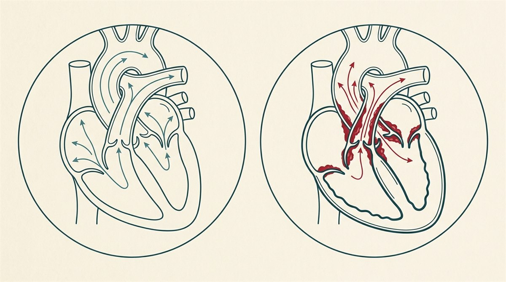

什麼是主動脈瓣狹窄？
主動脈瓣（aortic valve）是血液離開心臟、送往全身之前經過的最後一道閘門，位在左心室與主動脈之間，正常由三片瓣葉組成：心臟收縮時打開讓血流通過，收縮結束再密合、防止血液逆流。
主動脈瓣狹窄（aortic stenosis, AS）是指這道瓣膜變硬、變窄，無法完全打開，血流出口受限。心臟為了把血液擠出去，左心室必須更用力、久了會增厚（肥厚），最終可能力不從心，走向心臟衰竭。

常見嗎？為什麼會發生？
主動脈瓣狹窄在65 歲以上相當常見，但很多人是症狀出現、或健檢／檢查時才發現。成因主要有三類：
- 年齡相關的鈣化退化——最常見。隨年紀增長，鈣質逐漸沉積在瓣膜上，使它變硬變窄，多見於 65 歲以後。
- 先天性二尖瓣化主動脈瓣（bicuspid aortic valve）——天生只有兩片瓣葉（而非三片），較容易提早磨損鈣化，是較年輕族群主動脈瓣狹窄的重要原因。
- 風濕性心臟病——未妥善治療的鏈球菌感染（如鏈球菌咽喉炎）引發風濕熱，傷害瓣膜。
常見的風險因子包括：男性、年齡 65 歲以上、高膽固醇、高血壓、吸菸等。
症狀
主動脈瓣狹窄可以很多年都沒有症狀——這也是它的特點。等到瓣膜狹窄到一定程度，才會逐漸出現：
- 胸悶、胸痛（可能延伸到頸部、下巴、手臂）
- 頭暈、快昏倒或昏厥——尤其在用力、運動時。
- 呼吸困難、易喘，活動時更明顯。
- 疲倦、心悸、腳踝或下肢水腫。
「出現症狀」本身就是重要警訊。主動脈瓣狹窄一旦開始出現胸痛、昏厥或心臟衰竭等症狀，代表病情已進展到需要積極處理的階段——若不治療（置換瓣膜），大多數人存活通常不超過數年。因此有這些症狀時，務必儘快就醫評估，不要拖延。
典型聽診：收縮期雜音
醫師用聽診器常可在心臟收縮時聽到「射出型收縮期雜音」，這往往是門診中發現主動脈瓣狹窄的第一條線索，再安排超音波確認。
可能的併發症
- 心臟衰竭
- 心律不整（如心房顫動）
- 猝死
- 感染性心內膜炎（瓣膜感染）
- 肺高壓
診斷
- 心臟超音波（echocardiography）——診斷與分級的主要工具，可測量瓣膜開口面積、壓力差與心室功能。
- 理學聽診——聽到收縮期雜音。
- 心電圖、胸部 X 光。
- 必要時加做運動壓力測試、心導管、心臟電腦斷層（CT）或磁振造影（MRI）。
治療
重要觀念：沒有任何藥物能讓已狹窄的瓣膜「恢復」或阻止它繼續惡化。藥物（如利尿劑、控制血壓／心律的藥）只能緩解症狀。真正能解決狹窄的，是置換瓣膜。
- 輕度、無症狀：以超音波定期追蹤監測即可。
- 瓣膜置換（治療核心）：當狹窄達到嚴重程度且已出現症狀時，置換瓣膜是根本治療。方式包括：
- 外科主動脈瓣置換（SAVR）——開心手術置換為機械瓣或組織瓣。
- 經導管主動脈瓣置換（TAVR／TAVI）——經血管導管植入新瓣膜、不需開胸，恢復快，適合高齡或手術風險較高者（近年適應症持續擴大）。
- 氣球瓣膜擴張術——在特定情況下作為過渡性處置。
預後
主動脈瓣狹窄的預後，關鍵在於「有沒有及時處理」：
- 已出現症狀卻未治療——預後不佳，多數人存活不超過數年。
- 及時、在適當時機置換瓣膜——預後通常良好到極佳，之後只需終身定期追蹤，大多能恢復原本的生活。
什麼時候該就醫？
出現以下情況請立即就醫或撥打 119：
- 胸痛、突然嚴重呼吸困難、心悸
- 昏厥、快昏倒或頭暈
- 服藥後出現非預期的不良反應